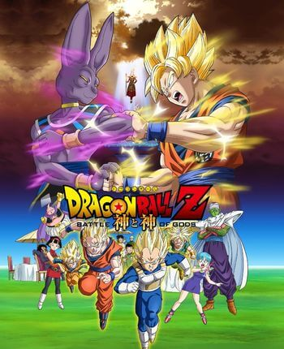

Como de costume, quando um anime ganha fama, é feito algum filme relacionado a ele, porém como Dragon Ball é extremamente famoso, foram feito 19 filmes(05/2018) e com a produção ja iniciada para outro filme no fim do ano, contabilizando assim 20 filmes, todos com muitas qualidades e com enredos interessantes, e principalmente com personagens notáveis e lutas fantasticas.
Segue a baixo alguns desses com suas respectivas notas (MyAnimeList):

O poder Invencível
Neste filme Goku e amigos conhecem dois sayajins que sobreviveram ao espaço, eles são Broly dito como o lendário super sayajin e seu pai. Para os mais conhecedores, Broly é um nome familiar, este que é um personagem extremamente querido pelos fãs, que é violento e extremamente forte, Broly guarda um rancor profundo por Goku...
Filme lançado em 1993
Nota:7.5
Batalha dos Deuses
Após a luta contra majin boo em Dragon Ball Z, Bills o Deus da Destruição aparece procurando o lendário Deus Super Sayajin, e isso gera um caos no aniversário da Bulma, gerando diversas lutas bem interessante e uma transformação completamente nova. Esse filme,lançado em 2013, serviu de teste, para ver se Dragon Ball ainda tinha forças para criar uma nova saga, e o resultado foi positivo, e portanto surgiu Dragon Ball Super.
Nota:7.5
Ressureição de Freeza
Um tempo se passou depois dos eventos do filme anterior, Goku e Vegeta foram treinar com Whis, mas sem perceberem o exército de Freeza o revive, que por acaso está mais doque pronto para sua vingança contra Son Goku. Mas como quem para no tempo é museu, Goku havia treinado muito e desenvolveu uma transformação superior à do Deus Super Sayajin, O Super Sayajin BLUE.
Filme Lançado em 2015
Nota:7.4
O pai de Goku
Esse OVA conta como foi os ultimos momentos do pai de Goku, Bardock, e do planeta de origem dos sayajins, o planeta Vegeta, sendo ambos destruidos pelo imperador do mal, Freeza.
OVA Lançado em 1990
Nota:7.7
Gohan e Trunks - Guerreiros do Futuro
Neste OVA, temos a história sobre o futuro de Trunks, onde Goku morreu após uma doença no coração, nessa realidade todos os guerreiros Z morreram, menos Gohan e Trunks, pelos androids 17 e 18. Gohan se torna um tutor para trunks e ambos buscam salvar seu mundo.
OVA Lançado em 1993
Nota:7.8
O legado de um Herói
Este é o ultimo filme de Dragon Ball lançado antes de 2013, nesse filme que se passa 100 anos no futuro, vemos Goku Junior tatara-neto de Goku em busca das esferas do dragão para curar sua vó,Pan(Filha de Gohan). Uma história divertida sobre os acontecidos pós GT.